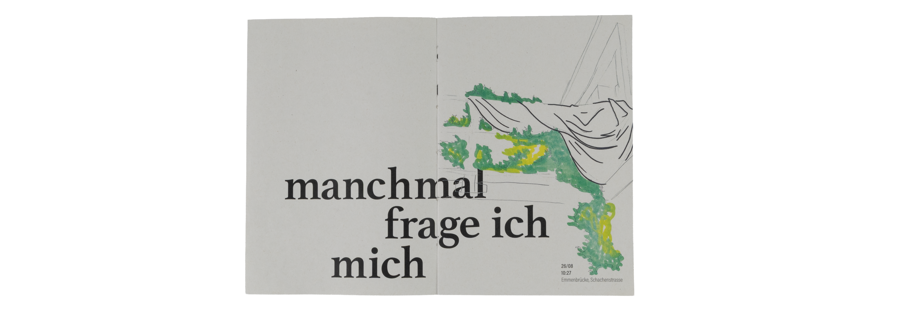
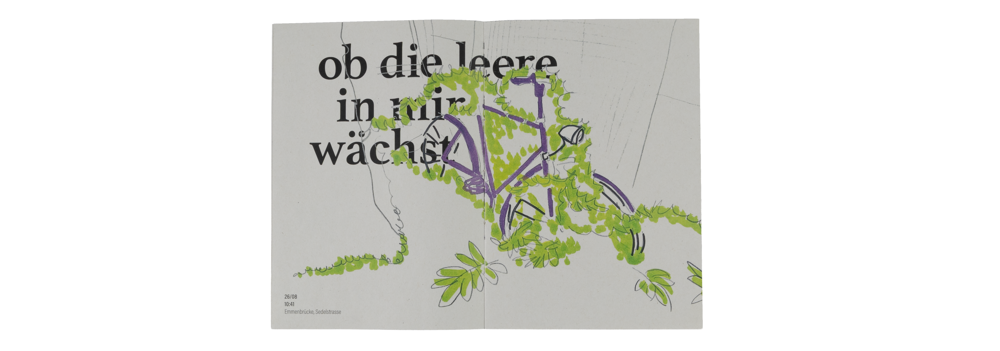
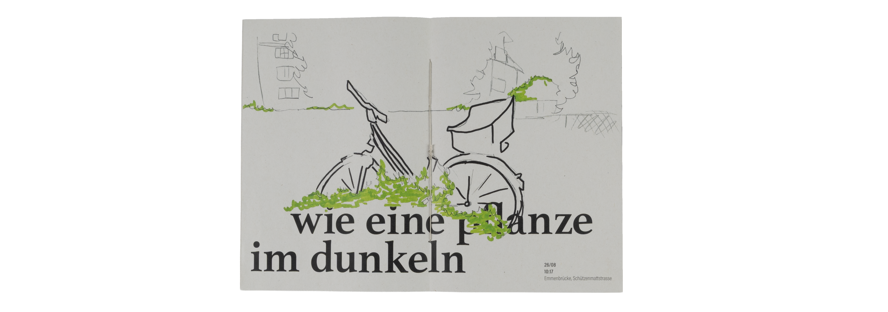
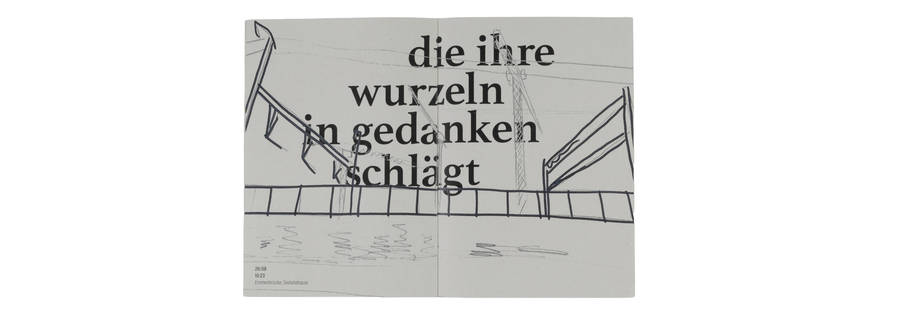

Projekte
About me
1
DAS SCHWEIGEN DES LEEREN HIMMELS
Manchmal frage ich mich, ob die Leere in mir wächst wie eine Pflanze im Dunkeln, die ihre Wurzeln in Gedanken schlägt, die ich längst vergessen wollte.
Aus diesem Satz entsteht eine Serie von Skizzen, die Emmenbrücke als überwucherte, dystopische Landschaft zeigen – ein Ort, an dem Vergessenes weiterwächst und Stille greifbar wird. Text und Bild treten in einen Dialog, der das Verlassene spürbar macht und die Leere als stillen, aber präsenten Raum erfahrbar werden lässt.

Paris Vorprojekt
Martin Infanger
Philippe Desarzens
2024